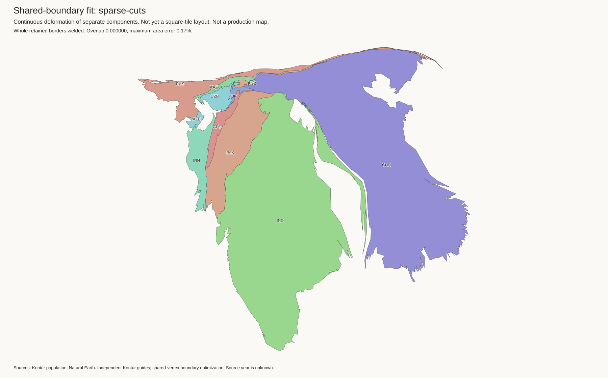
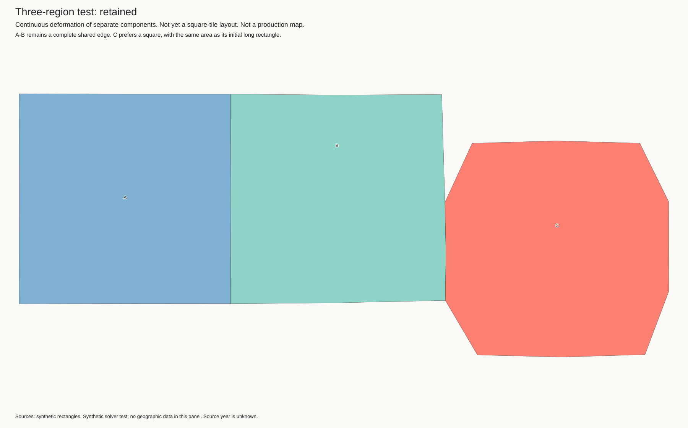
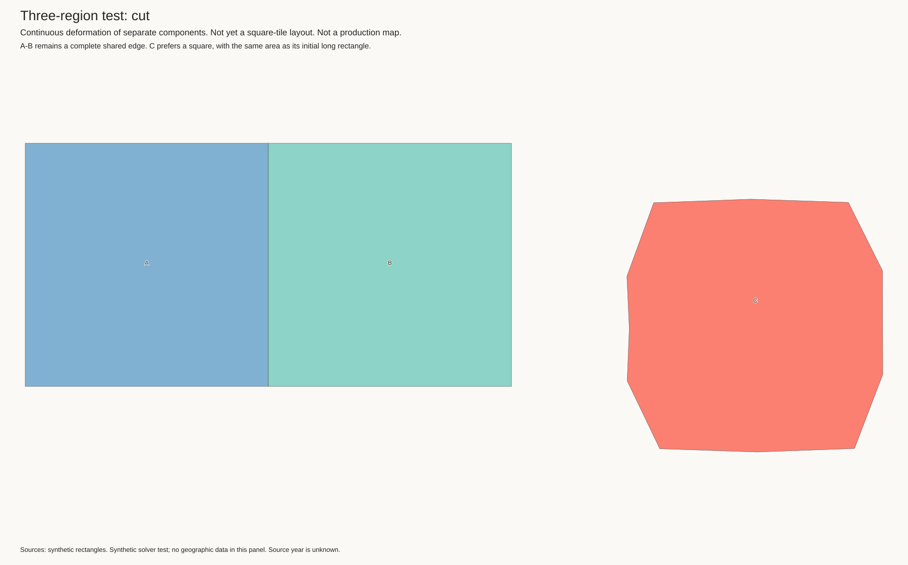

This replaces the rejected point-contact model, not the current-best map. The previous assembly let countries touch at isolated points. That did not preserve their borders. Here, both countries use identical vertex variables along every retained border. Only selected cuts get separate copies.
This is a border-preservation checkpoint, not a shape improvement. The regional optimizer still makes too little progress. Do not mistake an intact starting layout for a successful new layout. The full-planet current best and H3-MON mapping are unchanged.
Current best · Settings and checks · Rejected point-contact experiments
All retained borders have zero geometric gap and positive shared length. The mesh also checks that no source border segment was omitted during vertex matching. Overlap is in tile-area units. Country areas are approximate continuous areas; these are not tile layouts.
| Case | Complete retained borders | Border gaps | Overlap | Maximum area error |
|---|---|---|---|---|
| all-borders | 23 | 0 | 0.00000000 | 0.153% |
| sparse-cuts | 19 | 0 | 0.00000031 | 0.170% |
The same four audited borders are released: Russia–Kazakhstan, China–Kazakhstan, Russia–China, and Russia–Mongolia. There is no cut-specific attraction or gap target. General collision checks still apply. A cut allows separation; it does not require a visible gap.
The 12-country test starts from the saved continuous guide to obtain valid border topology. Independent Kontur shapes supply the preferred outlines. The regional panels omit other countries, islands, and lakes. White areas must not be read as a new sea map.

A and B start as squares. C starts as a long rectangle with the same area and prefers a square. In the cut case, C can reshape and separate while A-B remains a complete shared edge. This tests the mechanism; it does not prove that the Eurasian fit is solved.


Synthetic checks · Archive checksums
Large steps toward the independent outlines can make narrow coastlines cross themselves. The validity checks reject these steps. Small steps preserve the borders but do not yet fix the Kazakhstan pinch. A boundary-label audit found matching ordered Kontur patch labels for Russia, China, India, and Kazakhstan. But the first label-based contour mapping failed the self-intersection check on China, even with finer sampling. That mapping is not used in these panels. The next step is to correct contour sampling and correspondence. Do not weaken the border or collision checks to make an image look better.